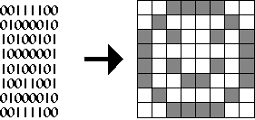
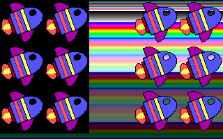

| What is a bitmap? |
One of the most important things in creating a user-friendly interface is the use of bitmaps. Without bitmaps, there would be no icons, no fancy buttons, and mouse pointers would have to be made of lines.
The term bitmap is a throwback from when monitors could only display one other color besides black. For two-color data files that store an image, each bit in the data file represents one pixel; a 1 meant the pixel was on, a 0 meant the pixel was off (Figure 13). Therefore, a two-color image is a map of bits.
|  Figure 13. A black & white bitmap in memory and on the screen. |
| The BMP file format |
There are many file formats for storing bitmaps, such as RLE, JPEG, TIFF, TGA, PCX, BMP, PNG, PCD and GIF. The bitmaps studied in this section will be 256-color bitmaps, where eight bits represents one pixel.. One of the easiest 256-color bitmap file format is Windows' BMP. This file format can be stored uncompressed, so reading BMP files is fairly simple; most other graphics formats are compressed, and some, like GIF, are difficult to decompress. To learn about other graphics file formats, visit x2ftp.
There are a few different sub-types of the BMP file format. The one studied here is Windows' RGB-encoded BMP format. For 256-color bitmaps, it has a 54-byte header (Table III) followed by a 1024-byte palette table. After that is the actual bitmap, which starts at the lower-left hand corner.
Table III. Windows' BMP file format header. |
| Drawing bitmaps |
Once read, displaying the bitmap is relatively easy, and
involves only a few memory copies to display memory. The
following is the code to display a 32x64 image stored in an array
bitmap:
for(y=0;y<64;y++)
for(x=0;x<32;x++)
VGA [x+y*320]=bitmap [x+y*32];
Something interesting to note about the BMP file format is
that each scan line is padded to the nearest 4-byte boundry. So,
if the image read has a width that is not divisible by four, say,
21 bytes, there would be 3 bytes of padding at the end of every
scan line. The program bitmap.exe does not account
for this; it assumes the bitmap's width is divisible by
four.
There are many techniques to implement transparency. One way is to assign one of the 256 colors to be transparent in the program. When drawing the image, a byte with the transparency value is not written to video memory. The following implements this using zero as the transparency value:
for(y=0;y<64;y++)
for(x=0;x<32;x++)
{
data=bitmap [x+y*32];
if (data!=0) VGA [x+y*320]=data;
}
The following program bitmap.c reads a bitmap
file rocket.bmp (Figure 14) and draws it to the
screen in a tiled fashion, using both opaque and transparent
bitmap drawing functions.
Figure 14. Bitmap rocket.bmp. |
| Program: bitmap.c |
|
|
||||||||||||
| Having trouble compiling or running the program? See the Troubleshooting page. |
|  Figure 15. Output from bitmap.exe. |
| Palette manipulation |
The background in the output of bitmap.exe is a
representation of the VGA's 256-color palette. Fortunately, the
palette is programmable to other colors, so bitmaps are not
forced onto an odd palette. Unfortunatly, the VGA only gives us 6
bits per color channel, so the best you can get is 18-bit color
(but you can only pick 256 of those colors, of course). Palette
information is stored after the header in the BMP file format.
Four bytes define each color: one byte each for blue, green, red,
and one reserved byte. The VGA understands color values in the
order red, green, blue, (reverse of the BMP format) plus the
program needs to change the palette data form 24-bit to 18-bit
(divide each color by four, or right-shift by two).
To set one color in the palette, write the color index to port 0x3C8 and then write the red, green, and blue values, in order, to port 0x3C9
outp(0x03c8, index); outp(0x03c9, red); outp(0x03c9, green); outp(0x03c9, blue);
To set all 256 colors in the palette, write zero to port 0x3C8 and then write all 768 bytes of the palette to port 0x3C9.
outp(0x03c8, 0);
for(i=0;i<256;i++)
{
outp(0x03c9, palette_red[i]);
outp(0x03c9, palette_green[i]);
outp(0x03c9, palette_blue[i];
}
Note that the palette cannot be set until the 256-color video mode has been set.
The program palette.c reads in an image, displays
it, and then cycles through all the colors by repeatedly changing
the palette.
| Program: palette.c |
|
|
||||||||||||
| Having trouble compiling or running the program? See the Troubleshooting page. |
Figure 16. Output from palette.exe. |
| Vertical retrace |
Something to note about the program is the function wait_for_retrace:
void wait_for_retrace(void)
{
/* wait until done with vertical retrace */
while ((inp(INPUT_STATUS) & VRETRACE));
/* wait until done refreshing */
while (!(inp(INPUT_STATUS) & VRETRACE));
}
If the while loops in this function were
commented out and the program was run, two things would happen:
the palette would cycle very, very quickly, and the image would
appear to have shearing effect as the palette cycled. The reason
has to do with the VGA's vertical refresh rate.
The VGA refreshes the screen 70 times a second, or 70hz. An
electron gun goes across the screen from left to right, top to
bottom. When it gets to the bottom of the screen, (i.e., it
finished refreshing), the electron gun has to travel from the
bottom right corner of the screen to the upper left corner of the
screen. That time, called the retrace period, is the ideal time
to change the palette. If the program did not wait for the
retrace, the palette would sometimes be changed in the middle of
a refresh, resulting in different colors on the top portion of
the screen for a split second. This is how the shearing effect
happens. To eliminate this, palette.c uses the wait_for_retrace
function.
The other effect is that the function acts as a timer, which, since the function is called twice, makes the palette cycle at 35 times a second. This is very useful when animating bitmaps, which is a primary focus in the next section.
| Next: Mouse Support & Animation |